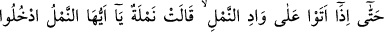
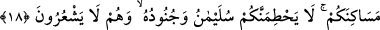
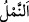
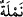

emreder, o da onu götürürdü.
Bir defasında Süleyman (a.s.) gök ile yer arasında seyrederken, Allah Teâlâ ona şöyle
vahyetti: “Konuşulan her şeyi mutlaka rüzgarın senin kulağına ulaştırmasını da senin
mülk ve saltanatına ilave ettim.”
Hikâye edilir ki Süleyman (a.s.) bir çiftçinin yanından geçti. Çiftçi hayret ederek:
“Dâvud âilesine büyük bir mülk verilmiş.” dedi. Rüzgar bu sözü Süleyman (a.s.)’ın
kulağına ulaştırdı. Bunun üzerine Süleyman (a.s.) aşağı indi ve yürüyerek çiftçinin
yanına vardı. Ona şöyle dedi: “Güç yetiremeyeceğin şeyleri temennî etmeyesin diye
senin yanına yürüyerek geldim.” Sonra ona: “Allah Teâlâ’nın kabul ettiği bir tesbîh,
Dâvud âilesine verilenlerden daha hayırlıdır.” dedi.
Süleyman (a.s.), Rasûlullah (s.a.)’in Medine’sine uğradı ve dedi ki: “Burası, âhir
zaman peygamberinin hicret yurdu olacak. Ne mutlu O’na îman edene, ne mutlu O’na
tâbî olana, ne mutlu O’nun peşinden gidene!”
18. Nihâyet karınca vâdisine geldikleri zaman, bir karınca: “Ey karıncalar!
Yuvalarınıza girin; Süleyman ve ordusu farkına varmadan sizi ezmesin!” dedi.
Bu cümle başlangıç cümlesidir. Yukarıdaki “hepsi bir arada (onun tarafından)
düzenli olarak sevk ediliyordu.” âyetinin haber verdiği yolculuğun sona erdiğini
bildirir. Sanki şöyle denilmiştir: “Onlar (bu şekilde) yürüdüler ve nihâyet...”
“Nihâyet karınca vâdisine geldikleri zaman,” üst taraftan oraya gelip onu gördükleri
zaman…
Bazıları demiştir ki: Fiilin “
” ile müteaddî kılınmıştır. Çünkü ‘vâdinin üstüne
gelmek’ ile orayı kat etmek, geçmek ve sonuna varmak kasdedilmiştir. Belki de onlar
vâdinin bittiği yerde konaklamak istemişlerdir. Çünkü yerde olanlar onlar havada
seyrederken değil, yere inmek istedikleri zaman onlardan korkar. Nitekim el-İrşâd’da
böyle geçmektedir. Başka görüşlerde aşağıda gelecektir.
Vâdi, suyun aktığı yerdir. “
” karınca demektir. Müfredi “
”dir. Karıncaya “
”
denilmesi, çok hareket ettiğinden ve ayaklarının az oluşundan dolayıdır.
“Karınca vâdisi” denilmesi, orada karıncalar çok olduğu içindir. Nitekim çok kar
yağan yerlere de “kar beldeleri” denir. Âyette kasdedilen yer ise Şam’da veya Tâif’te
karıncaların çok olduğu bir vâdidir. Meşhur olan görüşe göre bunlar küçük karıncalar
idi. Onların kurtlar ve Horasan develeri gibi büyük cins karıncalar oldukları da
söylenmiştir. Bu yüzden bazıları karınca vâdisinin cinlerin oturduğu ve karıncaların da
binekleri olduğu bir vâdi olduğunu söylemiştir.